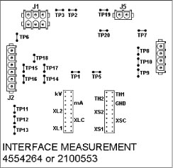

Operating Documentation
Direction 5114043-800, Rev# 9
LightSpeed 3.X Service Methods (Advanced)
Operating Documentation |
Illustration 1: Interface Measurement Board

INTERFACE MEASUREMENT BOARD TEST POINTS
| TP1 KV | Sensed kV signal - Scale 10 kV/V |
| TP2 KV | kV signal to OBC |
| TP3 KV GND | kV return signal to OBC |
| TP4 | |
| TP5 MA | Sensed kV signal - Scale 100 kV/V |
| TP6 MA GND | mA return signal to OBC |
| TP7 PS1 | Pressure Switch 1 |
| TP8 PS2 | Pressure Switch 2 |
| TP9 TH1 | Thermistor 1 (not used) |
| TP10 TH2 | Thermistor 2 (not used) |
| TP11 XS2 | Small Filament 2 |
| TP12 XSC | Small Filament Common |
| TP13 XS1 | Small Filament 1 |
| TP14 XL2 | Large Filament 2 |
| TP15 XLC | Large Filament Common |
| TP16 XL1 | Large Filament 1 |
| TP17 MAout | mA signal to OBC |
| TP18 GND | Tank ground |
| TP19 kV | Sensed kV signal - Scale 10 kV/V |
| TP20 GND | Tank ground |